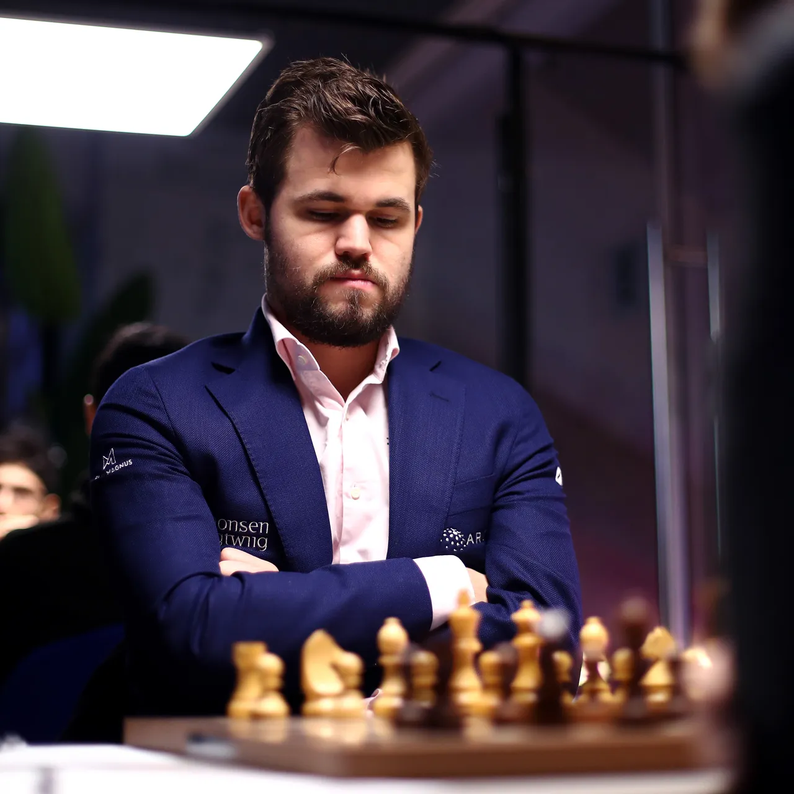

Famous Chess Players
The top chess players in the world!

Ding liren
Ding Liren is a Chinese chess grandmaster and the reigning World Chess Champion.
He is the highest-rated Chinese chess player in history and also a three-time
Chinese Chess Champion.

Magnus Carlsen
Magnus Carlsen is a Norwegian chess grandmaster, the five-time World Chess Champion,
the reigning five-time World Rapid Chess Champion, the reigning seven-time World Blitz
Chess Champion, and the reigning Chess World Cup Champion.

Viswanathan Anand
Viswanathan Anand is an Indian chess grandmaster and a former five-time World Chess
Champion. He became the first grandmaster from India in 1988,
and has the eighth highest peak FIDE rating of all-time.

Bobby Fischer
Bobby Fischer was an American chess grandmaster and the eleventh World Chess
Champion. He won his first of a record eight US Championships at the age of 14.

Garry Kasparov
Garry Kasparov is a Russian chess grandmaster, former World Chess Champion.
He was ranked world no. 1 for a record 255 months overall.
His peak FIDE chess rating of 2851,achieved in 1999.